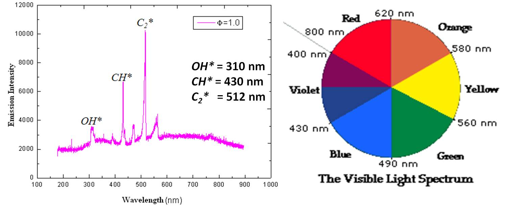

A flame is a spatial domain in which rapid exothermic reaction takes place emitting visible and infrared light. The frequency of these spectrum depends on intermediate reaction products.
The flame emits light of various wavelengths due to presence of certain chemical species in the flame which is known as Chemiluminescence. For example, incandescent solid particles called soot, produce the familiar yellow color in flame.
Premixed flame exhibits blue color due to the emission of single-wavelength radiation of the excited molecules formed in the flame.
Ultraviolet and visible radiation is emitted naturally.

Chemiluminescence is caused by electronically excited intermediate species including OH*, CH*, or C2* formed during chemical reactions.
Emitted radiation is resolved into components of different wavelengths and intensities with the help of a spectrophotometer.
Each species has a characteristic wavelength of its own (see figure), useful as its identifier.
It is therefore of interest to investigate if the collected chemiluminescence data can provide information on local fuel/air ratios and flame temperature.
This could be a cheap and non-intrusive method to monitor and control combustion.